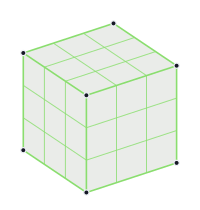
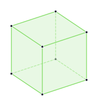
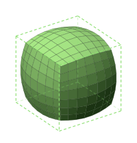

// клуб 3D-моделювання · 2026–2027
Бачити форму.
Будувати світи.
Навчальний ресурс клубу «3D-Майстерня». Ми не вивчаємо одну програму — ми вчимося бачити прості форми в будь-якому об’єкті й збирати з них своє: персонажів, транспорт, будівлі, реквізит для ігор.
Уперше тут? Почати з першого кроку
Ідея в трьох кроках
 Object Mode
Object ModeПобачити
01Будь-який предмет складається з простих форм: кубCubeShift A → Mesh → Cube. Найчастіша стартова форма блокауту., куляUV SphereГолови, колеса, лампи, очі., циліндрCylinderНоги, труби, колони, бочки., конусConeДахи, носи, шипи, ялинки., торTorusКільця, шини, ручки., площинаPlaneПідлога, крила, листи, леза.. Це навичка, яку ми тренуємо весь рік.
Розкласти
02Складну ідею не будують суцільним шматком. Її розбивають на 3–5 частин, кожну опрацьовують окремо й збирають у фіналі.
ARЗібрати
03Кожен блок закінчується реальним артефактом, який можна показати: від першого кольорового об’єкта до моделі в AR на телефоні.
Карта року
Десять блоків — від орієнтації в інтерфейсі до портфоліо-сторінки. Кожен закінчується чекпоінтом і має «виклик» для тих, хто швидший.
Потренуйся між заняттями
Короткі інтерактивні вправи працюють прямо в браузері, без встановлення й реєстрації.

тренажерДе я зараз?Стан екрана плюс натиснута клавіша — що станеться? Тренуй Object Mode проти Edit Mode, перш ніж це стане джерелом плутанини.Інтерфейс і режими · Блок 0
тренажерБачити формуРозклади об’єкт на прості форми й знайди справжній поворот фігури, а не її дзеркало.Просторове мислення · Блок 1
тренажерЧиста сіткаТри сітки, один згин: обери ту, що деформується передбачувано, а не ламається чи дає полюс.Топологія · Блок 4шаблонШаблон AR-вітриниГотова сторінка з <model-viewer>: підстав свою .glb-модель, опублікуй і відкрий у AR на телефоні.Публікація й AR · Блок 8, Блок 9Що потрібно
- Комп’ютерЗвичайний ПК чи ноутбук — цього достатньо.
- BlenderБезкоштовна програма для 3D. Ми працюємо в Blender 5.2 LTS.
- ТелефонДля блоку 8: власна модель у доповненій реальності. iOS чи Android.
- Своя ідеяПерсонаж, транспорт, будівля — що цікаво тобі. Досвід не потрібен.